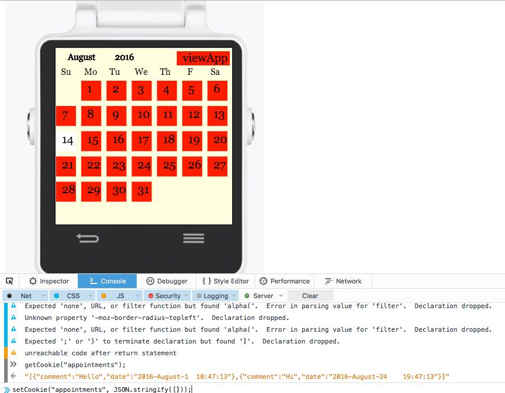
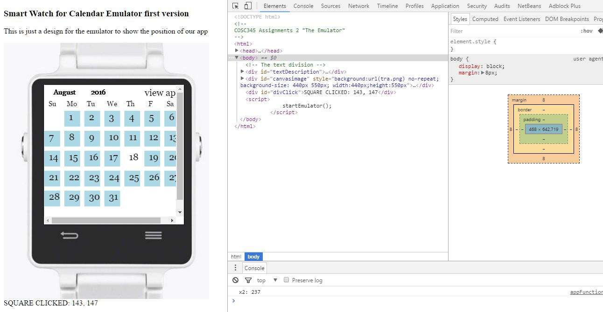
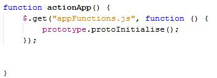
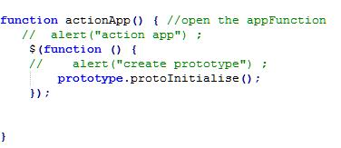
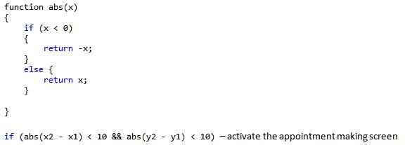

Report 3 for COSC Team
James Cross
Callum Tanner
Hussain Almarhoon
Youssef Alghamdi
The GitHub repository/branch where the project is held
https://github.com/CTanner020/COSC345-Application-and-Emulator/tree/assignment3
How to open the project
Assignment 3 is contained in the file Assignment3Final.zip to use the project simply unzip the file and click on the index.html file located in public_html folder. -this will prob change. --click on index...
Navigation
The webpage loads with a picture of a smart watch with grey squares on a white background on its screen. This is to represent the other apps that might be on a real smart watch.
Click on the grey tile that contains the txt Calendar App. Now you will see a grid of blue squares representing days of the month (the calendar). To change months, click and drag left or right (this represents a swipe input). Note that the current date is indicated by the lack of a blue square.
To make an appointment, click on a day tile. You will enter a screen where you can enter text and change the time of the appointment, click on the make appointment button to save the appointment. Click the back button to get back to the main calendar.
You can view the appointments by clicking on the view app text at the top right of the screen. This will show the appointments the date and time and also has a delete button to delete appointments.
Structure and Interface of the Emulator
The emulator itself is linked to the index.html page, which starts the emulator running. It draws the initial grid of squares, then calls createPrototype() to create the centre square that triggers the application starting. Clicking on the centre square triggers actionApp(), which starts the application.
In terms of interface with the application, the emulator has 8 main functions. The first 6 functions of the emulator(resetDisplay(), getObject(), writeContentTo(), getElementValue(), storeData() and returnData()) are all used to handle requests from the application to either change the value of some part of the browser, or to return the value of some part of the browser. The last two, mouseStart() and mouseEnd(), are used to handle click events on the canvas. mouseEnd() calculates the relevent values and passes them to the application, which then determines what actions to take.
The emulator does not use any features from json3.js. The application is the only part of the system that requires json3.js.
Tools
The tools used where NetBeans and the Google Chrome developer tools for finding bugs as well as the web console in Firefox. Websites we found helpful where http://www.w3schools.com/js/default.asp for JavaScript training and www.stackoverflow.com was also a great help for general trouble shooting.

An example of how we used the Firefox developers console to delete the appointment data before we made the button to access it. The getCookie("appointments") line is to see the appointments that have been made and the last line is to delete all appointments.
The google developer tools were also used to see the visual output of certain parts of the code to make sure all formatting worked harmoniously for the app.

The Console of Google Chrome was also used to make changes to the code in the browser in real time.
Problems with the Tools
The fact that NetBeans would run the app correctly even though the function call from appfunctions.js to prototype.protoInitialise was incorrect meant that if you tried to run the program any other way it would not operate correctly. This caused us a lot of trouble as the error was not spotted until it was too late in Assignment 2.
Hussain had a lot of trouble setting up the grid at the start of the app when it is first opened and wished that he had something that would calculate the position of the grid squares and where to click on the position for you.
Callum remarked that the NetBeans file structure is most annoying because the project is always kept as one package with all the files lumped together. This meant constant zipping and unzipping of files from GitHub rather than just being able to post/work on individual files.
Bugs
One of the huge problems we faced from assignment two was the fact that our index.html file would only run the functions from our JavaScript files if it was run from the NetBeans IDE in which it was created, obviously this was unacceptable . We managed to fix this by altering this bit of code:

To this:

As $(function(){...}); is jQuery shorthand for $(document).ready(function(){...}); this insured the code was being loaded after jQuery was initialized. However our JavaScript knowledge is limited and when we learned how to properly call sections of the application from the emulator and vice versa, this made the JQuery call unnecessary.
Since this was also the only section that used JQuery, removing it meant that we could do what we needed without adding the JQuery script to the code. So we removed it in order to make our code more concise.
Another problem was that the appFunctions JavaScript was communicating with the browser. The only communication with the browser should be made by the emulator so this needed to be fixed. The work around for this was to replace browser calls in the appfunctions.js with calls to functions in emulator.js that would carry out the same role. For Example:
var c = getThing("canvas_1");
So by using the "get thing" function the app itself does not know that is using a canvas. It only knows that there is an object called canvas_1.
We had another bug/design flaw in the code where the click and drag input was not being distinguished properly from single click input. To fix this we introduced the abs function to work out absolute value. Then we used the condition that if the absolute value of the difference between the x and y values of the mouseStart and mouseEnd functions was less than 10 this counted as a single click. If the value of the difference between the two is higher than 10 it counts as a drag.

Since the initial click is made on a different screen, there are no x1 or y1 values, meaning the code that handles swipes/square selection does not activate in response to the initial click.
Moving through years was not working correctly as it would only go to 2016 December and then would wrap around to February 2016. This was resolved by storing the year value of the date object, then restoring this at the end of the drawTwo() function. This prevented the month resetting at the end of the method from triggering another year change.
Also there was unit testing to implement which we had not come to grips with in the last assignment. We began with a simple assert command implementation for unit testing. This proved ineffective as the JavaScript functions we were trying to test had where to complex. It was not applicable to test different inputs to the functions against the expected outputs in most cases. We decided to try making our on test functions this again proved problematic.
After a lot of work only a few tests were able to be implemented. However all tests are passed in Chrome and Firefox. In future we would start testing from the very beginning, designing the program with testing in mind.
Testing in Different Browsers and OS
The app has been tested in MacOSX El Capitan on Safari, Firefox and is operating as intended, as it is in Linux with Firefox. The app runs fine in windows 10 in Firefox. There is a bug in Chrome (on all operating systems tested) where the app will not save appointments, this may be because we are using cookies to store our appointment data when we should have used local storage.
Project Progression
The first design change from assignment two was remove most of the swiping as before you would swipe left to get to the month and right to get to and swipe up and down to change month and day respectively. We decided it would be simpler to simply have a more generic Calendar view where you could simple "tap" on the day to make an appointment.
I made an example of how to set up a grid in Java (GridMaker.java in the main repository) and Callum implemented this for the app by making the grid squares clickable (ClickableGrid.html in the main repository), we also decided to keep the some swiping functionality. Left and right to navigate through the months. Next Hussain and Yousef implemented storing the appointments in cookies.
The appointments are made by typing with the keyboard obviously this would not be possible on a smart watch; the intended design is that you would type them in using your phone which would have a connection to the smart watch.
Because making the app proved harder than was anticipated some of the functionality we originally designed had to be cut:
Achievable
Extra Features (may not be achievable)
Social Dynamics
Our team has not really come together as a team we are just individuals working on an assignment. There is no conflict in the group really but that stems from the fact that no-one has a strong opinion about the project and no one is taking charge making the hard calls and leading the group in a clear direction.
This can be resolved only by defining the plan of attack and milestones being defined more clearly. Our goals and timeframes have not been kept up by the team.
There was not enough communication in the group this effected timelines because members of the group did not know where the other members where with the project. We all recognised this was a problem and decided to meet twice a week instead of once which improved things a lot.
That being said there is still a problem with communication as some members of the team do not seem very aware or find it hard to communicate the operations the code they have written is performing which makes writing the report very difficult. Also the team has not kept in contact enough about what bugs need to be fixed and there has not been enough testing of the code which is very problematic this can be solved by keeping better documentation on GitHub such as a record of current bugs.